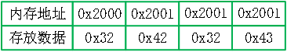
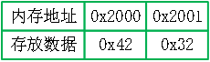
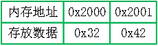

解析接收的数据，解析结果都是int型数据。
例如接受的数据，字符串显示为“2B2C”，实际对应的内存中数据是0x32423243，寄存器数据解析工具属性中“字节顺序”选择“高位在前”，解析结果十进制数据是843199043，如图1所示。

如果接收的数据，字符串显示是“B2”，实际对应的内存中数据是0x4232，属性中“字节顺序”选择“低位在前”对应的十进制数据是12866，选择“低位在前”对应的十进制数据是16946，如图2所示。

| 分类 | 参数名称 | 参数描述 |
|---|---|---|
| 属性窗口 | 字节顺序 | 低位在前：数据的低字节在前，具体参考详细说明。高位在前：数据的高字节在前，具体参考详细说明。 |
| 图像窗口 | 无 | 无 |
| 数据链 | 寄存器数据 | 待解析的数据。 |
| 高级界面 | 无 | 无 |
| 分类 | 参数名称 | 参数描述 |
|---|---|---|
| 监视窗口 | 整数结果 | 解析后的int型整数结果。 |
| 执行结果 | 工具执行结果。 | |
| 执行时间 | 工具执行时间。 | |
| 图像窗口 | 执行结果 | 显示工具执行结果，执行成功显示“OK”，执行失败显示“NG”，同监视窗口的执行结果参数。 |
| 数据链 | 整数结果 | 输出解析后的int型整数结果，供其他工具使用，同监视窗口“整数结果”参数。 |
假设接收的数据是12866，十六进制表示是0x3242，数据在内存中的存放方式分大小端模式，小端模式：即低字节数据存放在低地址，高字节在高地址；大端模式：即低字节数据存放在高地址，高字节在低地址。
低位在前：即下位机是小端模式，下位机发送的数据的低字节在前，上位机先接收到数据的低字节，存放在低地址，如图3所示；
高位在前：即下位机是大端模式，下位机发送的数据的高字节在前，上位机先接收到数据的高字节，存放在低地址，如图4所示。

无
参见“\Samples\寄存器数据.gvp”。
工程说明：
“寄存器数据解析_002” 工具，演示的处理接收到的1字节数据，对应的是变量中的#strHEX1;
“寄存器数据解析_003” 工具，演示的处理接收到的2字节数据，对应的是变量中的#strHEX2;
“寄存器数据解析_004” 工具，演示的处理接收到的4字节数据，对应的是变量中的#strHEX4;